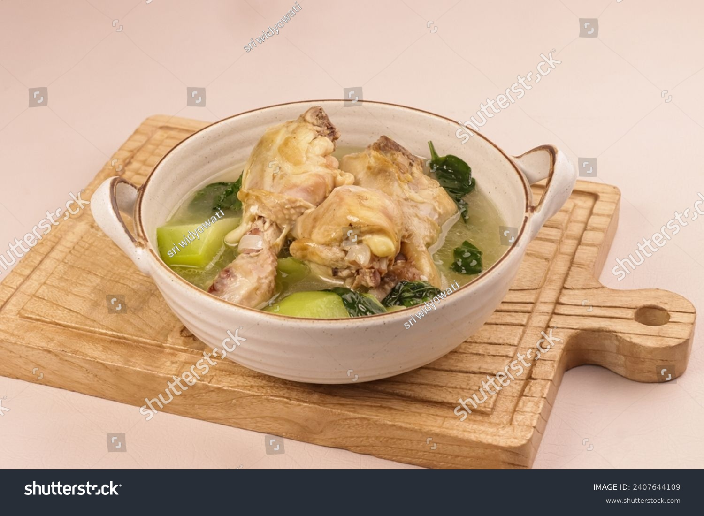

Home
Tinola

Description
Everyday Filipino Food that is easy to prepare
It involves boiling chicken in various vegetables and fruits
Ingredients
- Chicken cuts
- Salt
- Garlic
- Chayote
- Ginger
- Malunggay
- Onions
Steps
- Mince garlic, ginger and onions
- Cut Chayote in smaller pieces
- In a heated pot, saute garlic, onion and ginger until onions are softened
produce a sweet aroma
- Add the chicken cuts into the pot and sear until golden
- Add a tablespoon of Salt
- Add 2 cups of water
- Wait until water boils and let it simmer for 10 minutes
- After 10 minutes, add the chayote wedges into the pot.
- Continue to simmer for 15-20 minutes
- Turn off stove and add malunggay leaves, cover the pot for 2 minutes
- Tranfers contents to a serving bowl